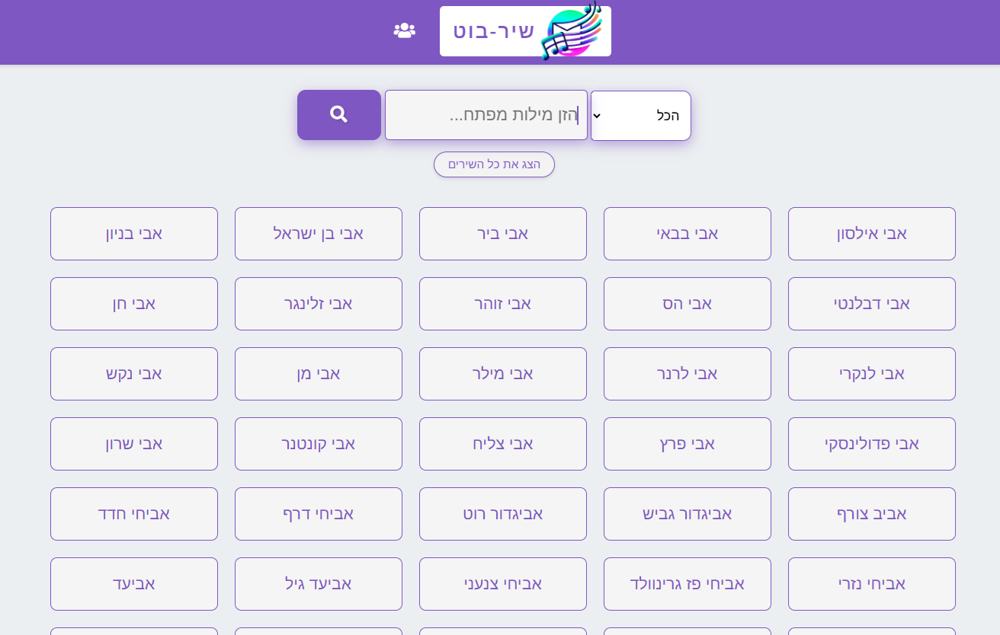

ברוך הבא!
זהו אינדקס הפרוייקטים של NH.LOCAL

תקשר איתי כאן
רוצה לקבל גישה למאגר מוזיקלי עם 500 ג'יגה?
-
שיר-בוט
באתר זה תוכלו להוריד שירים בחיפוש חופשי מתוך רשימה של קרוב ל-70,000 שירים!

האתר מכיל שירים ממגוון סגנונות, כולל שירים נדירים שלא תמצאו בשום מקום אחר -
ווינדוס 11 23H2 + מקבץ תוכנות מומלצות
קובץ iso המכיל מערכת ווינדוס מוכנה לשימוש, כולל כל התוכנות הבסיסיות לשימוש. בהם אופיס, wsa, מפעל הפורמטים, סי קלינר, תורת אמת, מפות ללא אינטרנט, תוכנת חיפוש מהיר, ועוד...
המערכת כוללת עדכונים מלאים של ווינדוס ואפליקציות מיקרוסופט
-
מסדר הסינגלים
האם אי פעם מצאתם את עצמכם טובעים בים של קבצי מוזיקה מפוזרים, בלי שום דרך קלה למצוא את השיר שאתם מחפשים? מסדר הסינגלים נועד לפתור בדיוק את הבעיה הזו!
זוהי תוכנה מתקדמת אך פשוטה לשימוש, שנועדה לארגן באופן אוטומטי את אוסף המוזיקה שלכם. מסדר הסינגלים סורק, מזהה וממיין את קבצי המוזיקה שלכם לתיקיות מסודרות לפי שם האמן, כך שתוכלו למצוא את כל השירים האהובים עליכם בקלות ובמהירות.

-
מסדר ההורדות
סקריפט שימושי במיוחד (לפי רמת ההתעניינות בו...). מבצע סדר בתיקיית ההורדות בפרט, ובכל תיקיה שהיא בכלל, לפי סוגי קבצים. הסקריפט מחלק את הקבצים בתיקיות לפי תמונות, וידאו, מסמכים, תוכנות ועוד. הגרסה העדכנית היא 7.0.
- מסייע הגיבוי
סקריפט המבצע עדכון "מראה" בין קבצים. כך שקבצים הקיימים במקור יעברו לגיבוי, וקבצים שנמחקו מהמקור יימחקו מהגיבוי. קיים גם בגרסה גרפית למחצה. הגרסה הנוכחית היא 4.0, או 1.0 לגרסה הגרפית.

- מעצב האצווה
סקריפט המסייע לעיצובם של סקריפטים לדוברי עברית. הסקריפט הופך את הכתב מהסוף להתחלה, ומעצב אותו לאמצע החלון. גרסה 3.5.
-
הופך הכתב
הסקריפט הופך מחרוזות טקסט מהסוף להתחלה. שימושי למי שכותב קבצי באט בעברית... הגרסה הנוכחית היא 4.0
-
יוצר האייקונים
סקריפט קטן וחביב שיוצר סמל לדא"ק, כרטיסי זיכרון וכוננים. כולל גם סקריפט למחיקת הסמל.
-
מזהה גרסת קובץ ISO
בדרך כלל, רשום על כל קובץ ISO מה הוא ומה הגרסה שלו. מה קורה בקובץ לא מוכר, חסר פרטים? כיצד נדע אם זו גרסה 21H2 או אולי בכלל גרסה 1909? בשביל זה בא סקריפט זה. הגרסה הנוכחית היא 3.0
-
מבטל חסימת קבצים
כאשר מורידים קבצי תוכנה או מסמכים מהרשת, המחשב מבצע חסימה אוטומטית של הקבצים. ואז צריך להקיש על אישור בפתיחה, או לעיתים גם להיכנס למאפייני הקובץ ולבטל את החסימה. סקריפט זה עושה את העבודה על מאות קבצים - תוך רגע. הגרסה הנוכחית היא 3.0.
-
מסייע ההורדה
סקריפט פשוט להחריד. כל מה שהוא עושה זה להוריד קבצים למחשב. היתרון בו שהוא עוקף את חסימת האנטי וירוס ואפשר לסגור את הדפדפן גם באמצע ההורדה... הגרסה הנוכחית - 1.0.
-
מעלים קבצי מערכת בנגן
מכירים את הקבצים ה"לבנים" שממלאים את הנגן, אתם מוחקים אותם והם חוזרים שוב ושוב? סקריפט זה פותר חצי בעיה - כשהנגן יחובר למחשב לא תראו קבצים כלל. גרסה 2.0.
-
משדרג הקישורים
הסקריפט מבצע שינוי בקישורי דרייב כך שיהפכו לקישורי הורדה מידית, או לחילופין - קישורים לצפייה ללא אפשרות עריכה. גרסה 1.0.
-
מנקה סל המחזור
הסקריפט מיועד לאותם פעמים רבות שמכניסים דיסק קשיח חיצוני לכמה מחשבים, ובכל מחשב מכניסים כמה קבצים לסל המחזור. הבעיה מתחילה שאי אפשר לנקות קבצים שמחקת במחשב פלוני, כשאתה מחובר למחשב אלמוני. ואת זה הסקריפט בא לסדר. הגרסה העדכנית היא 3.0.
-
מעתיק קבצים לאנדרואיד
שילוב של סקריפט עם קובץ רגיסטרי, שמוסיף לתפריט הימני אפשרות להעתקת הקובץ לתוך מערכת הקבצים של WSA. גרסה 3.0.
-
מבטל הגנת כתיבה להתקנים
סקריפט ישן נושן שגם לא ממש עובד, אבל תפס משום מה את עיני הציבור, וכעת עלה בגרסה משופרת. גרסה 2.0.
-
מושך התמונות
זוג סקריפטים המבצעים העתקה של כלל תמונות הנעילה המאוחסנות במחשב, וכן העתקה של קבצי תוכנת "bing wallpaper" למשתמשים בתוכנה זו, בהתאמה.
לאינדקס הפרוייקטים שלי בפורום "מתמחים טופ"